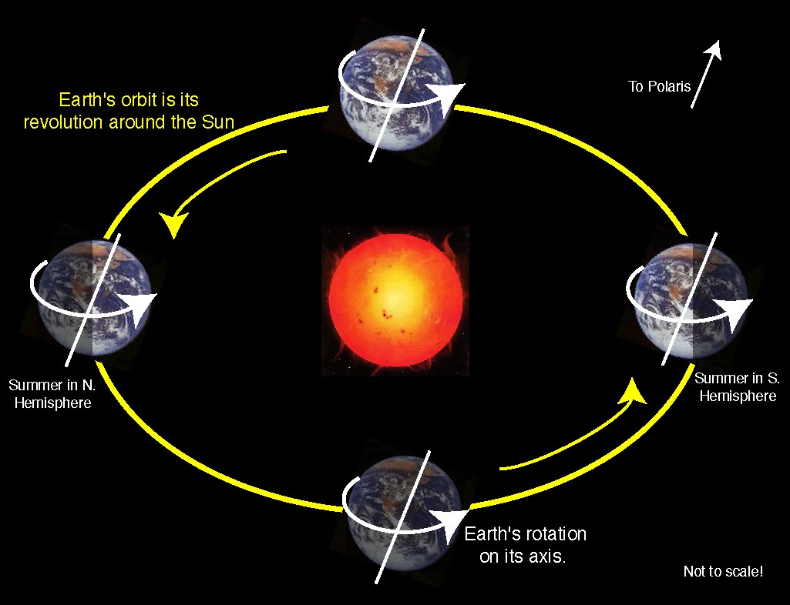

ORBIT AND ROTATION
As Earth orbits the Sun, it completes one rotation every 23.9 hours. It takes 365.25 days to complete one trip around the Sun. That extra quarter of a day presents a challenge to our calendar system, which counts one year as 365 days. To keep our yearly calendars consistent with our orbit around the Sun, every four years we add one day. That day is called a leap day, and the year it's added to is called a leap year.
